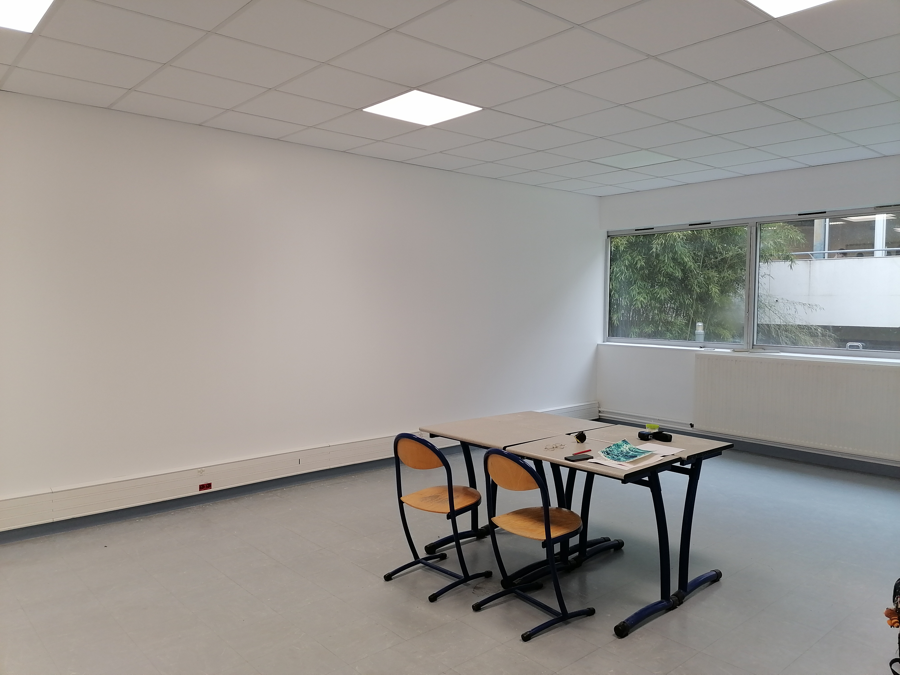
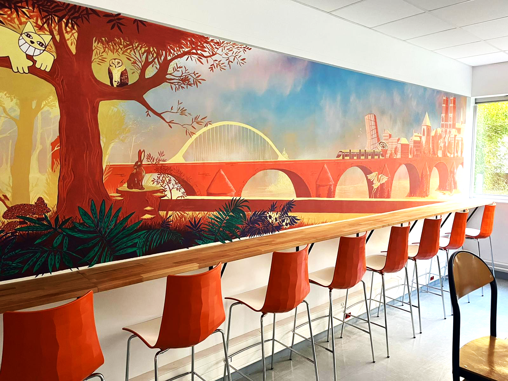
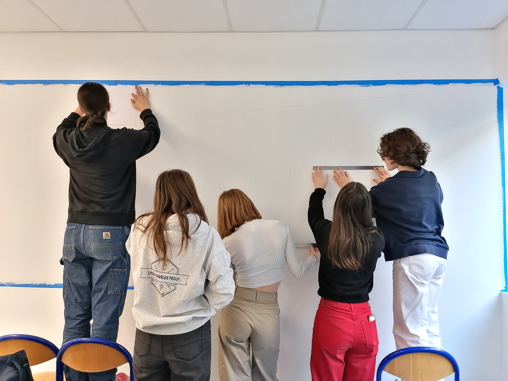
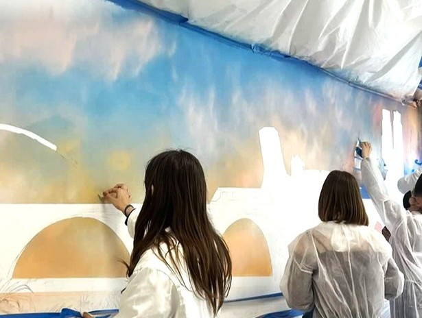
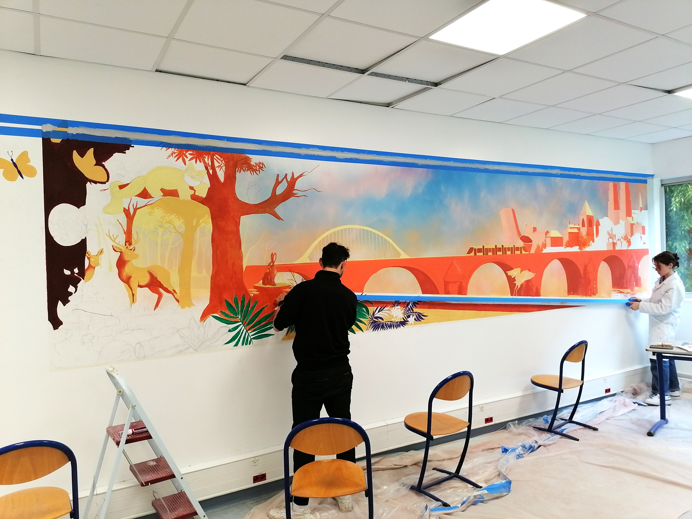
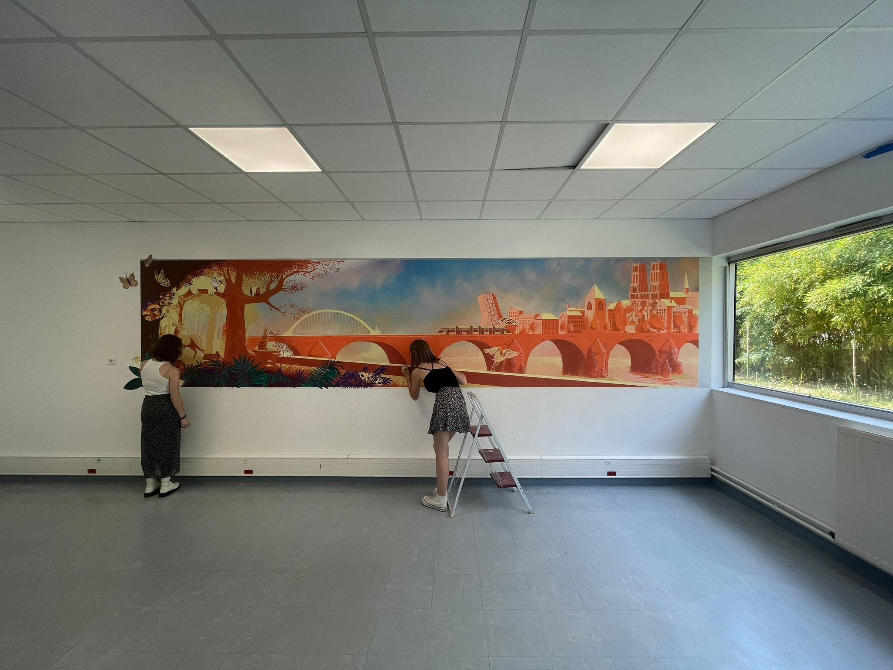

-FRESQUE MURALE-
hommage à Orléans
décembre 2022 – mai 2023
Projet collaboratif réalisé avec 5 étudiants.
La fresque est conçue en trompe l’œil, comme une fenêtre dans la salle qui donnerait sur le pont Royale, à proximité de l'établissement.
Nous avons essayé de concentrer sur une même surface un ensemble de lieu et d’éléments emblématiques de la ville.






